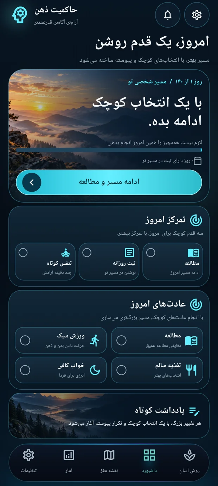

شروعِ قابل انجام
لازم نیست تمام مسیر را امروز بروی.
اولین قدم میتواند شناختن یک محرک، نوشتن حال امروز یا خواندن یک بخش کوتاه باشد. مسیر ۲۰ هفتهای و ثبت روزانه، به تصمیم تو شکل مشخصتری میدهند.
همراه تو: مسیر مرحلهای و ثبت روزانه
مسیر را ببین از واکنش خودکار، به انتخاب آگاهانه
برای لحظهای که میگویی «میخواهم جور دیگری ادامه بدهم». حاکم ذهن، همراه فارسی تو برای مدیریت مصرف پورن و عادتهای ناخواسته است؛ محرکهایت را بشناس، در لحظهٔ دشوار مکث کن و برای امروز یک قدم روشن داشته باش.
هر تغییر، از یک انتخاب کوچک آغاز میشود.
از جایی شروع کن که الان هستی
یک انتخاب کوچک، برای آشنایی با ابزار مناسب تو.
بدون ثبت پاسخ یا اطلاعات شخصی.
شروعِ قابل انجام
اولین قدم میتواند شناختن یک محرک، نوشتن حال امروز یا خواندن یک بخش کوتاه باشد. مسیر ۲۰ هفتهای و ثبت روزانه، به تصمیم تو شکل مشخصتری میدهند.
کمتر سردرگم شو، آگاهانهتر ادامه بده
از شناخت عادتها تا لحظهای که به مکث نیاز داری؛
ابزارهای لازم، در یک جای آرام.
با ثبت روزانه و مرور روندها، زمانها و موقعیتهای دشوار را بهتر بشناس و انتخاب بعدیات را آگاهانهتر انجام بده.
ثبت روزانه و تحلیل روندمسیر ۲۰ هفتهای، مطالعهٔ ایزیپیسی و تمرینهای روزانه کمک میکنند تغییر را به کارهای کوچک و قابل انجام تبدیل کنی.
مطالعه و ریتم روزانهبخش SOS با تمرین تنفس، مکث و آرامسازی در دسترس توست تا از لحظهٔ دشوار فاصله بگیری و قدم بعدی را انتخاب کنی.
جعبهابزار SOSیک نگاه نزدیکتر
طراحی شده تا به جای گمشدن میان ابزارها، روی قدم بعدی خودت تمرکز کنی.
تصاویر، پیشنمایش برنامهاند؛ چیدمان بعضی بخشها ممکن است در نسخهٔ نصبشده متفاوت باشد.

تغییر را وارد زندگی روزمره کن
مسیر ۲۰ هفتهای، چارچوبی برای مطالعه و تمرین است. در کنار آن، این چرخهٔ ساده را به روزت بیاور؛ با ریتم خودت و بدون انتظارِ بینقص بودن.
آشنایی با دریافت برنامهشروع روز
به مسیرت سر بزن، یک بخش بخوان و برای موقعیتهای دشوارِ امروز یک قدم در نظر بگیر.
در لحظهٔ نیاز
به SOS برو؛ چند لحظه تنفس و آرامسازی را امتحان کن و به قدم بعدیات فکر کن.
پایان روز
حال و تجربهات را ثبت کن. مرور روندها کمک میکند روز بعد را با شناخت بیشتری شروع کنی.
یک روز دشوار، پایان داستان تو نیست. ثبت صادقانهٔ تجربه، نقطهٔ شروع قدم بعدی است.
قدم مناسب امروز منگاهی، فقط یک مکث لازم است
برای چند لحظه عجله نکن. اگر دوست داری،
با ریتم طبیعی خودت یک نفس آرام بکش.
هر زمان خواستی میتوانی متوقفش کنی.
کمتر پراکنده، بیشتر همراه
یادداشتها در یک جا، نمودارها در جایی دیگر، تمرینها فراموششده؟ حاکم ذهن مطالعه، ثبت روزانه و ابزارهای مکث را کنار هم میآورد تا برگشتن به مسیرت سادهتر باشد.
این مسیر، فقط متعلق به توست
ثبتها و یادداشتهای برنامه روی دستگاهت نگهداری میشوند. این وبسایت هم فرم ثبت اطلاعات شخصی، تبلیغات یا ابزار تحلیل رفتار ندارد.
شروع کار با امکانات پایه رایگان است. بعضی محتواها و ابزارهای پیشرفته به دسترسی PRO نیاز دارند. جزئیات دسترسی و قیمت معتبر را پیش از خرید، داخل همان نسخهٔ برنامه بررسی کن؛ این سایت پرداختی دریافت نمیکند.
برای شروع به حساب کاربری نیاز نداری و امکانات روزمره برای استفادهٔ آفلاین طراحی شدهاند. دانلود، بهروزرسانی و خدمات فروشگاه ممکن است به اینترنت نیاز داشته باشند.
دریافت برنامه فقط از صفحهٔ رسمی آن در مایکت خواهد بود. تا زمان فعالشدن این صفحه، وضعیت دریافت «بهزودی» است. حاکم ذهن برای اندروید ۷ و بالاتر طراحی شده است.
خیر. ۲۰ هفته، ساختار برنامه برای مطالعه و تمرین است، نه زمان قطعی درمان یا تغییر مغز. حاکم ذهن ابزار خودیاری است و جایگزین تشخیص یا درمان تخصصی نیست. اگر یک رفتار باعث پریشانی یا اختلال در زندگیات شده، از متخصص واجد صلاحیت کمک بگیر.
دادهها روی دستگاهت هستند و نباید بدون نسخهٔ پشتیبان قابل اتکا، انتظار بازیابی پس از حذف برنامه را داشته باشی. پیش از حذف یا تعویض گوشی، گزینههای خروجی و پشتیبان همان نسخه را بررسی کن.
قدم اول، همینجاست
قرار نیست امروز همهچیز عوض شود. برای شناخت بهتر خودت و یک انتخاب آگاهانهتر، یک جای مشخص داشته باش.
صفحهٔ رسمی برنامه در مایکت بهزودی در دسترس قرار میگیرد.